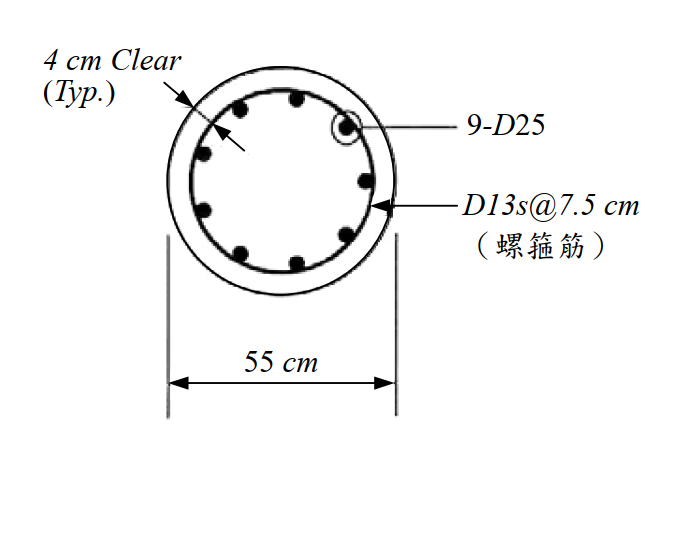

考題編號：SD-2009-4
主分類： SD-U3-1 結構耐震設計（含RC結構與鋼結構）
副分類： SD-U2-2 建築耐震設計規範
分析方法： 概念題（含計算）——RC圓形柱螺箍筋體積比檢核
標籤： RC耐震設計 圓形柱 螺箍筋 體積比ρs 圍束要求 核心面積 規範檢核 D13 D25 韌性設計
1. 原始題目重述（Problem Restatement）
題目： 依結構混凝土設計規範，螺箍筋之體積比 $\rho_s$ 不得小於下式之值：
$$\rho_s = 0.45\left(\frac{A_g}{A_c} - 1\right)\frac{f'_c}{f_y}$$
材料強度：
- 混凝土抗壓強度：$f'_c = 350 \text{ kgf/cm}^2$
- 螺箍筋規定降伏強度：$f_y = 4{,}200 \text{ kgf/cm}^2$
柱斷面（如圖）：
- 柱直徑：$D = 55$ cm
- 保護層（to outside of spiral）：4 cm（典型值）
- 主筋：9-D25
- 螺箍筋：D13@7.5 cm（pitch）

圖說：圓形RC柱，外徑 $D=55$ cm，四周保護層（clear cover）= 4 cm（至螺箍筋外緣），主筋 9-D25（直徑 2.54 cm，$A_s = 5.067 \text{ cm}^2$），螺箍筋 D13（直徑 1.27 cm，$A_{sp} = 1.267 \text{ cm}^2$），螺距 $s = 7.5$ cm。$f'_c = 350 \text{ kgf/cm}^2$，$f_y = 4{,}200 \text{ kgf/cm}^2$。
求： 檢核配置之螺箍筋是否符合規範要求。（25 分）
2. 考題核心精神與出題者意圖（Core Concepts & Examiner's Intent）
核心觀念： 螺箍筋（spiral）的最小體積比要求來自「圍束設計（Confinement Design）」——螺箍筋提供的側向圍束壓力，補償了混凝土外殼（shell）在塑鉸區脫落後的強度損失，使核心混凝土維持延性行為。
出題者意圖：
- 測驗核心面積 $A_c$（= 至螺箍筋外緣的面積）與全截面積 $A_g$ 的正確定義
- 測驗螺箍筋實際體積比 $\rho_s$ 的計算公式（容積比定義）
- 測驗是否能進行規範的直接檢核（計算值 vs 規範要求值）
3. 解題戰略地圖與陷阱分析（Strategic Roadmap & Trap Analysis）
作戰計畫：
- 計算全截面積 $A_g$ 與核心面積 $A_c$（明確定義核心直徑）
- 代入公式計算規範要求 $\rho_{s,req}$
- 由螺箍筋配置（D13@7.5 cm）計算實際 $\rho_{s,actual}$
- 比較：$\rho_{s,actual} \geq \rho_{s,req}$？
關鍵陷阱：
| # | 陷阱 | 說明 | 應對策略 |
|---|---|---|---|
| ❶ | 核心面積的邊界定義 | 規範（ACI 系）定義：$A_c$ 以螺箍筋外緣為界（不含外殼混凝土），核心直徑 $D_c = D - 2 \times \text{cover}$ | 核心直徑 $= 55 - 2 \times 4 = 47$ cm（到螺箍筋外面） |
| ❷ | 螺箍筋 ρs 的計算 | 體積比 = 螺箍筋體積 ÷ 核心混凝土體積，需用螺箍筋中心線直徑計算圓周長 | $d_{sp,c} = D_c - d_{bar} = 47 - 1.27 = 45.73$ cm |
| ❸ | $A_g / A_c$ 比值 | 此比值應 > 1（如果 ≤ 1 代表柱斷面全是核心，不合理），直接影響 $\rho_s$ 需求大小 | 計算後確認 $A_g/A_c = 1.37 > 1$ |
3.5 變數層次分析（Variable Hierarchy Analysis）
複習提示：第一次解題後，在每個卡住的知識點旁標記
⚠；第二次複習時只看有⚠的項目。
最終目標
判斷 ρs,actual ≥ ρs,req？（是否符合規範）
本題關鍵公式（依計算順序）
$$\text{Step 1: } D_c = D - 2 \times \text{cover} = 55 - 8 = 47 \text{ cm}$$
$$\text{Step 2: } \rho_{s,req} = 0.45\left(\frac{A_g}{A_c} - 1\right)\frac{f'_c}{f_y} = 0.45 \times 0.3693 \times \frac{350}{4200}$$
$$\text{Step 3: } \rho_{s,actual} = \frac{\pi \cdot d_{sp,c} \cdot A_{sp}}{A_c \cdot s}$$
$$\text{Step 4: 比較 } \rho_{s,actual} \text{ vs } \rho_{s,req}$$
L1：題目直接給定
| 符號 | 數值 | 說明 |
|---|---|---|
| $D$ | 55 cm | 柱外徑 |
| cover | 4 cm | 保護層（至螺箍筋外緣） |
| $f'_c$ | 350 kgf/cm² | 混凝土抗壓強度 |
| $f_y$ | 4,200 kgf/cm² | 螺箍筋降伏強度 |
| 主筋 | 9-D25 | 直徑 2.54 cm |
| 螺箍筋 | D13@7.5 cm | 直徑 1.27 cm，間距 7.5 cm |
L2：需知識點推導
Step 1：幾何計算
| 符號 | 公式／來源 | 卡關? |
|---|---|---|
| $D_c$ | $D - 2 \times \text{cover} = 55 - 8 = 47$ cm | |
| $A_g$ | $\pi D^2 / 4 = \pi(55)^2/4$ cm² | |
| $A_c$ | $\pi D_c^2 / 4 = \pi(47)^2/4$ cm² |
Step 2：規範要求
| 符號 | 公式／來源 | 卡關? |
|---|---|---|
| $A_g/A_c$ | $55^2/47^2 = 3025/2209 = 1.3693$ | |
| $\rho_{s,req}$ | $0.45(1.3693-1)(350/4200) = 0.01385$ |
Step 3：實際體積比
| 符號 | 公式／來源 | 卡關? |
|---|---|---|
| $A_{sp}$ | D13：$\pi(1.27)^2/4 = 1.267$ cm² | |
| $d_{sp,c}$ | $D_c - d_{bar} = 47 - 1.27 = 45.73$ cm（螺箍筋中心線直徑） | |
| $\rho_{s,actual}$ | $\pi d_{sp,c} A_{sp} / (A_c \cdot s) = 0.01399$ |
L3：深層知識（不懂就卡住）
| 知識點 | 說明 | 卡關? |
|---|---|---|
| 螺箍筋圍束設計的物理意義 | 螺箍筋提供側向約束壓力 $f_l$，提升核心混凝土有效強度 $f'_{cc} > f'_c$，補償外殼脫落的強度損失 | |
| 核心面積 vs 全截面積 | $A_g/A_c > 1$ 的差值代表外殼混凝土（shell）比例；外殼越厚，需要越多螺箍筋才能補償 | |
| 體積比公式的推導 | $\rho_s = $ 單位長度螺箍筋體積 ÷ 單位長度核心體積 = $(\pi d_c A_{sp}) / (A_c \cdot s)$ |
4. 步驟化詳細計算過程（Step-by-Step Detailed Calculation）
Step 1：鋼筋截面積查表
D13 螺箍筋： $$d_{bar} = 1.27 \text{ cm}, \quad A_{sp} = \frac{\pi(1.27)^2}{4} = \frac{\pi \times 1.6129}{4} = 1.267 \text{ cm}^2$$
D25 主筋（供參考，本題不需要）： $$d_{bar} = 2.54 \text{ cm}, \quad A_{s,D25} = \frac{\pi(2.54)^2}{4} = 5.067 \text{ cm}^2$$
Step 2：計算截面幾何
全截面積 $A_g$： $$A_g = \frac{\pi D^2}{4} = \frac{\pi \times 55^2}{4} = \frac{\pi \times 3025}{4} = 2375.8 \text{ cm}^2$$
核心直徑 $D_c$（至螺箍筋外緣）： $$D_c = D - 2 \times \text{cover} = 55 - 2 \times 4 = 47 \text{ cm}$$
核心面積 $A_c$： $$A_c = \frac{\pi D_c^2}{4} = \frac{\pi \times 47^2}{4} = \frac{\pi \times 2209}{4} = 1734.9 \text{ cm}^2$$
面積比： $$\frac{A_g}{A_c} = \frac{2375.8}{1734.9} = 1.3693$$
Step 3：計算規範要求 ρs,req
$$\rho_{s,req} = 0.45\left(\frac{A_g}{A_c} - 1\right)\frac{f'_c}{f_y}$$
$$= 0.45 \times (1.3693 - 1) \times \frac{350}{4200}$$
$$= 0.45 \times 0.3693 \times 0.08333$$
$$= 0.45 \times 0.030775$$
$$\boxed{\rho_{s,req} = 0.01385 = 1.385\%}$$
Step 4：計算實際螺箍筋體積比 ρs,actual
螺箍筋中心線直徑： $$d_{sp,c} = D_c - d_{bar,spiral} = 47 - 1.27 = 45.73 \text{ cm}$$
體積比定義（每一螺距長度）：
$$\rho_{s,actual} = \frac{\text{螺箍筋體積（每螺距）}}{\text{核心混凝土體積（每螺距）}} = \frac{\pi \cdot d_{sp,c} \cdot A_{sp}}{A_c \cdot s}$$
代入數值： $$= \frac{\pi \times 45.73 \times 1.267}{1734.9 \times 7.5}$$
$$= \frac{3.14159 \times 45.73 \times 1.267}{13011.8}$$
$$= \frac{182.0}{13011.8}$$
$$\boxed{\rho_{s,actual} = 0.01399 = 1.399\%}$$
Step 5：規範檢核
$$\rho_{s,actual} = 0.01399 \quad \overset{?}{\geq} \quad \rho_{s,req} = 0.01385$$
$$0.01399 > 0.01385 \quad \checkmark$$
$$\boxed{\text{螺箍筋配置符合規範要求（裕度約 }1.0\%\text{）}}$$
計算結果彙整
| 項目 | 數值 |
|---|---|
| 柱外徑 $D$ | 55 cm |
| 核心直徑 $D_c$ | 47 cm |
| 全截面積 $A_g$ | 2375.8 cm² |
| 核心面積 $A_c$ | 1734.9 cm² |
| $A_g / A_c$ | 1.3693 |
| 規範要求 $\rho_{s,req}$ | 0.01385（1.385%） |
| 螺箍筋中心線直徑 $d_{sp,c}$ | 45.73 cm |
| D13 面積 $A_{sp}$ | 1.267 cm² |
| 螺距 $s$ | 7.5 cm |
| 實際體積比 $\rho_{s,actual}$ | 0.01399（1.399%） |
| 檢核結果 | ✅ 符合規範（裕度 1.0%） |
5. 關鍵爭議點與進階探討（Critical Issues & Advanced Discussion）
5.1 核心面積 Ac 的邊界——外緣 vs 中心線
台灣規範（參照 ACI 318）明確規定 $A_c$ 以螺箍筋外緣為界：
$$D_c = D - 2 \times \text{(clear cover to outside of spiral)}$$
因此本題 $D_c = 55 - 2 \times 4 = 47$ cm。
若誤用主筋中心線（$D_c = 55 - 2 \times 4 - 2 \times 1.27/2 = 53.73$ cm 或類似值），將高估 $A_c$，低估 $\rho_{s,req}$，導致不保守的錯誤結論。
5.2 本題裕度極小的設計意義
$$\frac{\rho_{s,actual}}{\rho_{s,req}} = \frac{0.01399}{0.01385} = 1.010$$
裕度僅 1.0%，接近規範下限。這代表：
- 若改用 D13@8.0 cm 螺距，則 $\rho_s = 182.0/(1734.9 \times 8) = 0.01312 < 0.01385$，不符合規範
- 本配置 D13@7.5 cm 是剛好滿足的下限間距，考官刻意設計成「剛過」的題目
5.3 螺箍筋設計的物理意義
螺箍筋圍束機制：
$$f'_{cc} \approx f'_c + 4.1 f_l \quad \text{（Richart 公式）}$$
$$f_l = \frac{\rho_s f_y}{2} \quad \text{（側向約束壓力）}$$
以本題計算： $$f_l = \frac{0.01399 \times 4200}{2} = 29.4 \text{ kgf/cm}^2$$
$$f'_{cc} \approx 350 + 4.1 \times 29.4 = 350 + 120.5 = 470.5 \text{ kgf/cm}^2$$
圍束後核心混凝土強度約提升至 471 kgf/cm²，比未圍束的 350 kgf/cm² 高 34%，足以補償外殼脫落（外殼面積 $= A_g - A_c = 640.9$ cm²，約佔總面積 27%）的強度損失。
5.4 考場答題要點
- 明確寫出核心直徑的定義（至螺箍筋外緣）
- 規範公式與實際計算分開呈現，結論明確（符合 or 不符合）
- 若僅到小數點兩位精度，ρs,actual ≈ 0.014 > ρs,req ≈ 0.014，仍應以多位數計算確認